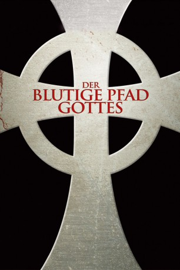

gesehen am 09.03.2015
gesehen am 09.03.2015Alternativ: The Boondock Saints gesehen am 09.03.2015
 
 IMDB-Wertung: 7.8 / 10
IMDB-Wertung: 7.8 / 10  Metascore:
Metascore: 
Die beiden MacManus-Brüder sind noch richtige Katholiken und gehen jeden Sonntag in die Kirche. Deshalb machen sie auch die mahnenden Worte des Pastors, nie wegzusehen, wenn jemand in Not ist, besonders betroffen. Als Tage später die Russenmafia ihre Stammkneipe schließen will, wollen sie das nicht so einfach hinnehmen und wehren sich. Die verprügelten Gangster allerdings schwören Rache und stehen am nächsten Tag vor der Wohnung der Beiden. Nach der anschließenden Auseinandersetzung sind die beiden Russen tot. Doch nach der detaillierten Schilderung der Ereignisse kann FBI-Mann Smecker die Notwehr erkennen und läßt die Beiden laufen.Jetzt sind sie in einer anderen Zwickmühle. Da sie nicht wollen, das die Russenmafia den Tod ihrer Leute rächt, treten sie die Flucht nach vorn an. Mit mehr Glück als Geschick eliminieren sie mit einem Schlag alle Gangsterbosse.
Jahr: 1999
Dauer: 108 Minuten
FSK: Not Rated
Land: Kanada Studio: Capelight PicturesTonspuren:
Untertitel:
Auflösung: 1080p (1920×816) Größe: 9318 MB
Genre: Action, Krimi, Thriller
Regisseur: Troy Duffy
Drehbuch: Troy Duffy
Soundtrack: Jeff Danna
Darsteller:
 Willem Dafoe als Paul Smecker
Willem Dafoe als Paul Smecker Norman Reedus als Murphy MacManus
Norman Reedus als Murphy MacManus Billy Connolly als Il Duce
Billy Connolly als Il Duce Brian Mahoney als Detective Duffy
Brian Mahoney als Detective Duffy Dot-Marie Jones als Rosengurtle Baumgartener
Dot-Marie Jones als Rosengurtle Baumgartener Robert B. Kennedy als Media Man #2
Robert B. Kennedy als Media Man #2 Carlo Rota als Yakavetta
Carlo Rota als Yakavetta Ron Jeremy als Vincenzo Lipazzi
Ron Jeremy als Vincenzo Lipazzi Sergio Di Zio als Oly
Sergio Di Zio als Oly Joe Pingue als Geno
Joe Pingue als Geno Kevin Chapman als Chappy
Kevin Chapman als Chappy Michael Arthur als Prison Guard , uncredited
Michael Arthur als Prison Guard , uncredited Richard Fitzpatrick als The Chief
Richard Fitzpatrick als The ChiefDatei: X:\FSK18-Collections\Blutige Pfad Gottes\Blutige Pfad Gottes 1, Der (1999, FSKNot Rated, 1920x816).mkv seit 16.02.2015
Festplatte: FSK18
 Alle Filme aus Gruppe 'FSK18-Collections\Blutige Pfad Gottes'
Alle Filme aus Gruppe 'FSK18-Collections\Blutige Pfad Gottes'